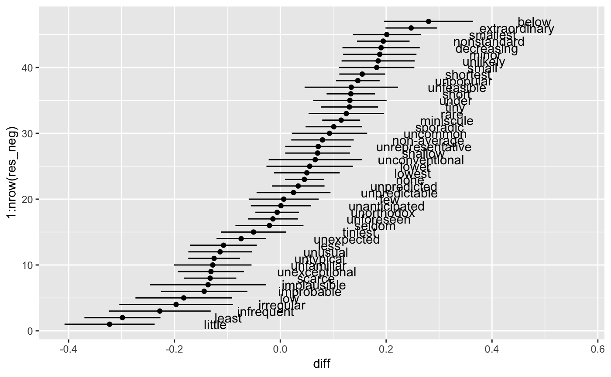

Kneer Study
Will Lowe
2018-08-07
kneer.RmdLoad the items and vectors (they’re now built into the package)
library(cbn)
data(kneer)
data(kneer_vecs)
summary(kneer)
1
Condition Role N
NormNeg attribute 48
NormPos attribute 57
DescriptiveNeg target 47
DescriptivePos target 63Run the bootstrapped WEFAT and plot the results: First negative descriptive terms:
library(ggplot2)
res_neg <- wefat_boot(kneer, kneer_vecs,
a_name = "NormPos", b_name = "NormNeg",
x_name = "DescriptiveNeg")
ggplot(res_neg, aes(diff, 1:nrow(res_neg), label = DescriptiveNeg, xmin = lwr, xmax = upr)) +
geom_point() +
geom_text(nudge_x = 0.2) +
geom_errorbarh(height = 0) and now the positive ones
res_pos <- wefat_boot(kneer, kneer_vecs,
a_name = "NormPos", b_name = "NormNeg",
x_name = "DescriptivePos")
ggplot(res_pos, aes(diff, 1:nrow(res_pos), label = DescriptivePos, xmin = lwr, xmax = upr)) +
geom_point() +
geom_text(nudge_x = 0.2) +
geom_errorbarh(height = 0)